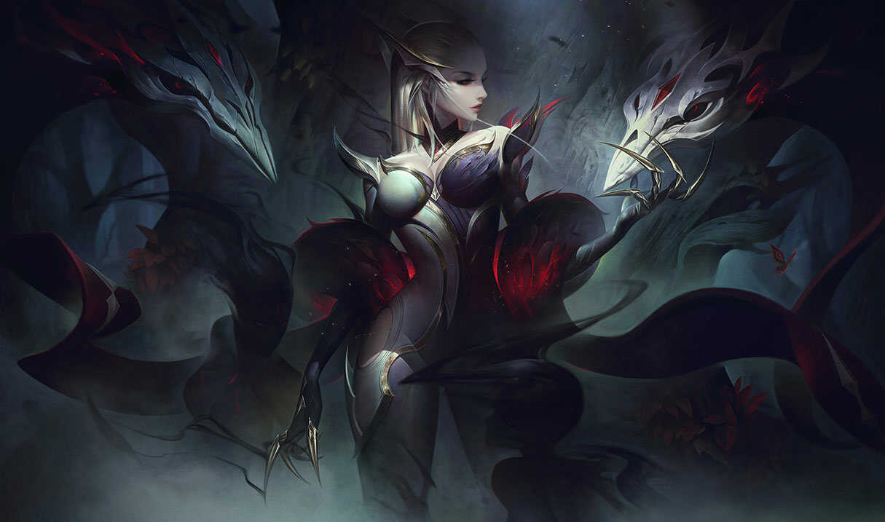

Játékmenet
A League of legends csapat alapú játék, ahol két, öt főből álló csapat mérkőzik meg egymással. A cél, hogy a játékosok együttműködve elpusztítsák az ellenséges csapat bázisának központi épületét, a Nexust. A mérkőzések általában a Summoner’s Rift nevű térképen zajlanak, de vannak más játékmódok is, mint az ARAM (All Random All Mid) vagy az időszakos eseményekhez kötött módok. Minden játékos egy-egy egyedi képességekkel rendelkező bajnokot (championt) irányít, akik különféle szerepeket tölthetnek be, például:
- Tankok: Sebzést elnyelő harcosok.
- Támogatók: Csapattársaik gyógyításával vagy erősítésével segítik a csapatot.
- Mágusok és Távolsági hősök: Nagy sebzést osztó, de sérülékeny karakterek.
- Assassinok: Az ellenség kulcshőseinek gyors likvidálására specializálódtak.
Stratégia és Kommunikáció
A siker kulcsa a jól megtervezett stratégia és a csapatmunka. A játékosoknak össze kell hangolniuk a mozgásukat, ügyelniük kell az erőforrásokra (arany, tapasztalat), és kihasználni a térkép kontrollját, hogy előnyt szerezzenek az ellenféllel szemben.
Közösség és E-sport
A LoL a globális e-sport színtér egyik legismertebb szereplője. Világszerte zajlanak versenyek, a csúcspontot pedig az éves World Championship jelenti, ahol a legjobb csapatok mérkőznek meg a bajnoki címért. A játék közössége aktív, tele van lelkes rajongókkal, streamerekkel és tartalomkészítőkkel.
Hogsmeade faluban különféle boltokat látogathatsz meg, például bájital-összetevőket vásárolhatsz vagy új varázspálcát szerezhetsz. A környező területeken titokzatos romok, barlangok és más felfedeznivalók rejtenek izgalmas kincseket és kihívásokat. 
Miért Népszerű?
- Diverzitás: Több mint 160 bajnok közül lehet választani.
- Folyamatos frissítések: Új tartalmak, egyensúlyi változások és események.
- Ingyenes játszhatóság: A játék alapja teljesen ingyenes, csak kozmetikai elemek vásárolhatók pénzért.
- Kihívás: A játék mélysége és stratégiai lehetőségei hosszú távon is érdekesek maradnak.
A League of Legends egyszerre igényel ügyességet, stratégiai gondolkodást és csapatmunkát, így tökéletes választás mindazok számára, akik szeretnek másokkal együttműködve sikerre törni.